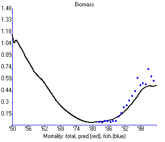
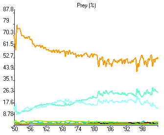
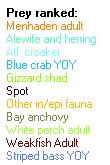
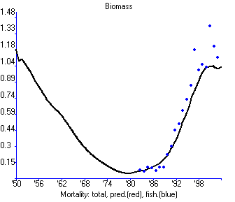
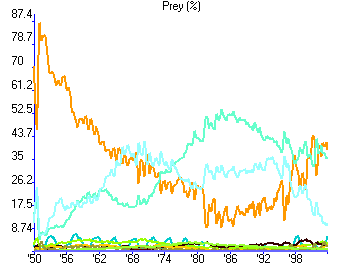
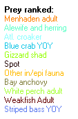

Predators are said to ‘switch’ from one prey to another when predator diet proportion of each type changes more rapidly than the relative abundance of that type in the environment. Eating more of something when it becomes abundant does NOT imply switching, but rather just more frequent encounters with that type; the predator is said to switch if it takes disproportionately more of the thing as it becomes more abundant.
Three mechanisms that can lead to switching patterns in diet composition and prey mortality are represented in Ecosim:
In the third of these approaches, the Ecosim rate of effective search aij for predator type j on prey type i is modified at each simulation time step in relation to changes in abundance of all prey types, using a ‘gravity model’ approximation for the IFD allocation of predator foraging time among prey-specific foraging arenas. The equation used for this modification is
aij(t) = KijaijBi(t)Pj / Σi’ai’jBi ’(t)Pj Eq. 55
Here, aij is the base rate of effective search calculated from Ecopath and vulnerability exchange parameters, Kij is a scaling constant that makes the time-specific aij(t) equal aij when all prey biomasses Bi are at Ecopath base values, and the ‘switching power parameter’ Pj is a user-supplied (empirical, to be estimated from field data or model fitting) power parameter representing how strongly the predator responds to changes in prey availability (switching power parameter on the Group info form). In particular:
Pj = 0,no switching
Pj << 1,prey must become very rare before predator j stops searching for them
Pj >> 1, predator switches violently when any prey increases or decreases.
Pj is limited to the range [0,2]. While
Impact of setting a positive switching power parameter can be exemplified based on migratory striped bass. In this example switching results in much more variable for the predator – which simulation is the more appropriate can only be determined from empirical information (Figure 3.11).
Without switching



With switching (power parameter = 2)



Figure 3.11. Effect of allowing switching for migratory striped bass (Chesapeake Bay model, Christensen et al., MS).